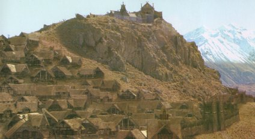
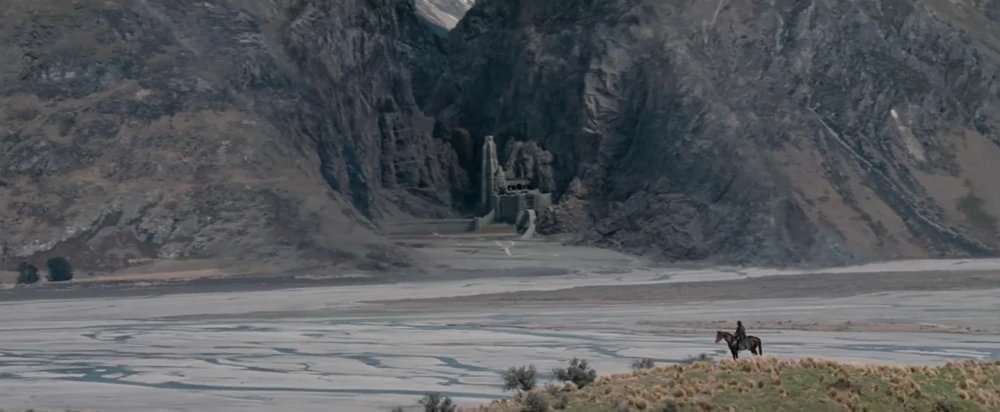

Rohan
- Edoras
- Helm's Deep
Main town in Rohan and site of the royal court.
Helm's Deep, named for Helm Hammerhand, was a fortified gorge in the White Mountains located below the Thrihyrne. It lay near the Westfold and was the location of the Hornburg. It was later made famous by the Battle of the Hornburg, a major battle of the War of the Ring.
